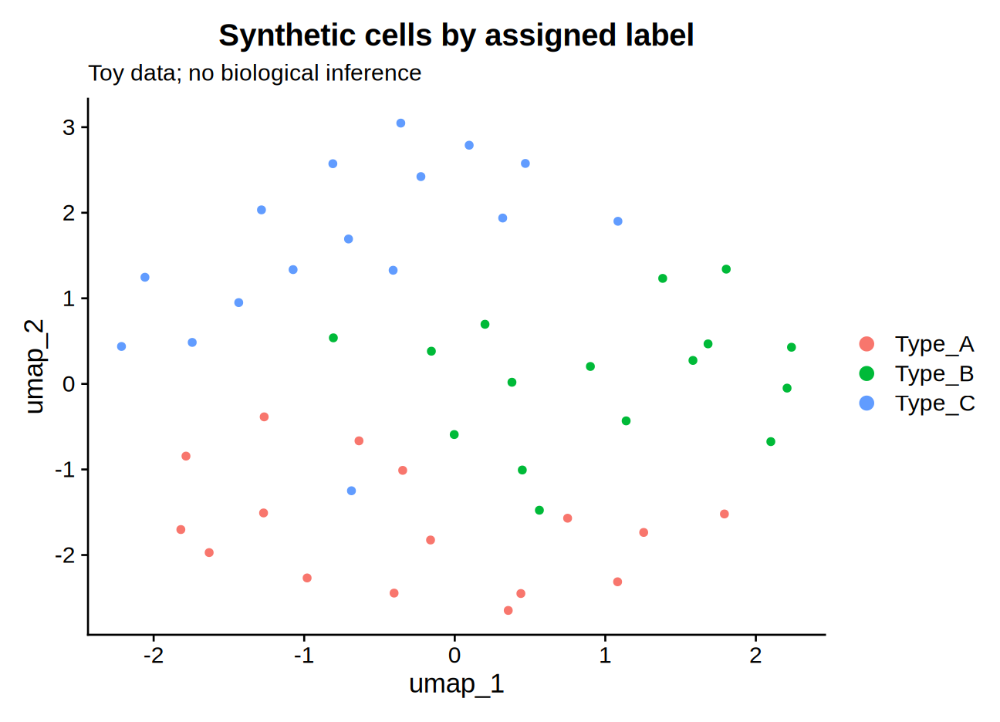
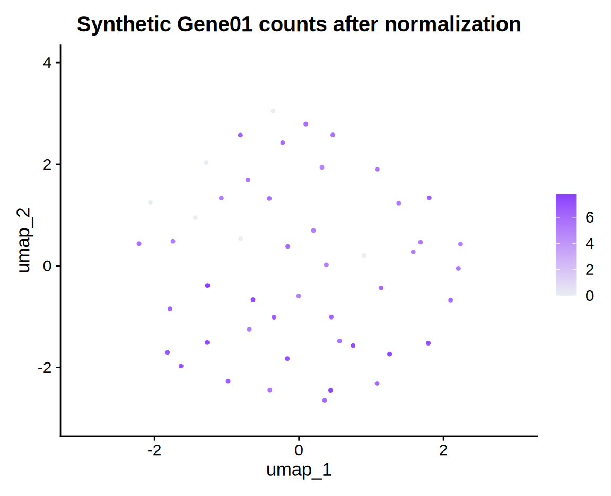
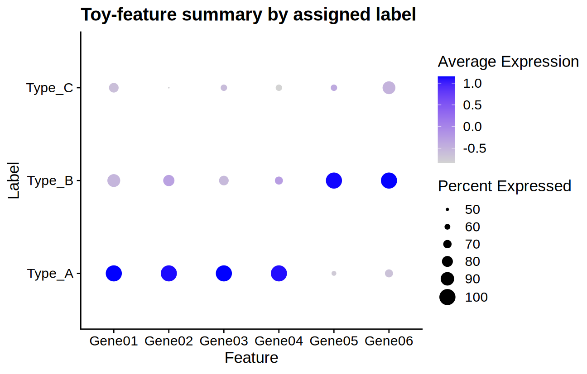
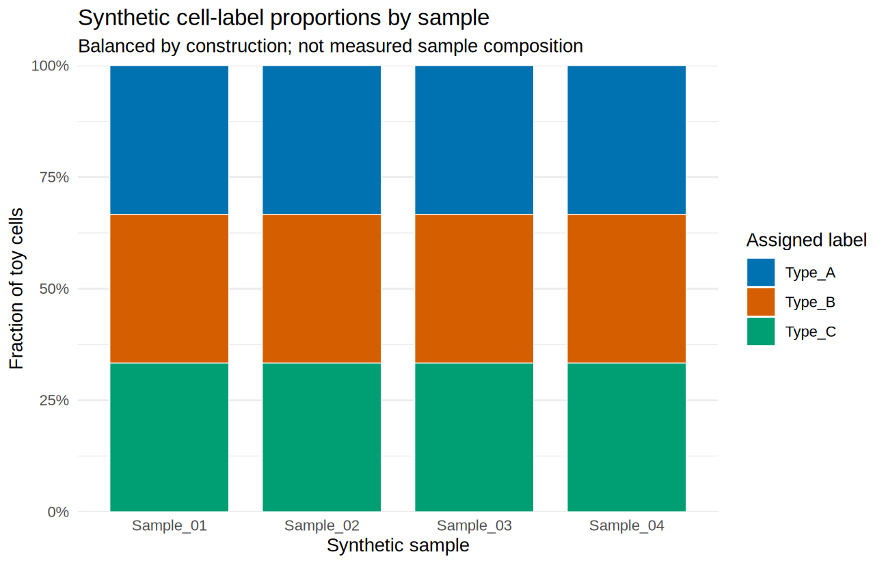

Visualizing single-cell data with R plotting packages
Nasir Mahmood Abbasi, PhD
Bioinformatics Educator

This walkthrough provides a tested, runnable Seurat/ggplot2 route using a small synthetic fixture, followed by optional SCpubr and dittoSeq templates. The synthetic plots demonstrate code and plot mechanics only; they are not biological observations or evidence about real cell types.
Format: Executable core example plus advanced templates. Start with the included generated toy count and metadata CSVs, then adapt the core script to your own QC-reviewed object. The optional wrapper examples require extra packages and your own compatible object; they were not executed in this revision.
Core input contract: the runnable script generates and reloads a 36-feature by 48-cell synthetic count matrix and metadata, then computes normalization, variable features, scaling, PCA, and UMAP. No precomputed object or optional plotting wrapper is needed. The SCpubr/dittoSeq templates later in this page instead expect your own compatible Seurat object and metadata.
Learning objectives & prerequisites
By the end of this lesson you will be able to:
- Choose plot types that match categorical annotations, continuous expression, or sample-level composition.
- Inspect grouping variables and expression scales, then save plots with dimensions and formats suited to the intended use.
- Explain what the plots show and what they cannot establish about biological differences.
Prerequisites (assumed completed):
- Completed a basic single-cell RNA-seq (scRNA-seq) workflow: alignment, count matrix, cell/gene QC, normalization, dimensional reduction and clustering (e.g., using Seurat).
- For the optional wrapper templates only: a QC-reviewed Seurat object saved as
data/seurat_obj.rds, containing the metadata columns and assay data used in each template. The core route creates its own small object. - For the runnable core: R, Seurat, and ggplot2. This core route was executed with the exact versions recorded in
files/visualization-example/package-versions.txt. The later SCpubr and dittoSeq templates remain unexecuted examples; check their installed help and release requirements before adapting them.
How plot choices affect interpretation
Exploratory plots in Seurat (DimPlot, FeaturePlot, DotPlot) are excellent for iterative analysis, but default styling is designed for quick inspection rather than publication. Well-crafted figures must communicate a specific biological message: which cell types change with condition, which genes mark a cluster, or how pathway activities distribute across cell states. Poor color choices, inconsistent legends, and cluttered axis labels can obscure biological signals or, worse, mislead the reader.
These packages expose different plotting interfaces and defaults. A helper function can shorten repeated plotting code, but it does not make a palette accessible to every reader or make separate plots directly comparable. Check the data mapping, legends, and scale in each exported figure.
Reproducible, sequential workflow
The first route below runs from the repository root with the included synthetic fixture. The later wrapper examples are optional templates, not required dependencies for the core route; when adapting them, verify that your object contains the named metadata, features, and reductions.
Verified core route: generate the fixture, compute PCA/UMAP, and export plots
The script makes a deterministic toy dataset (seed 20261023) and writes its input fixture to files/visualization-example/synthetic_counts.csv and synthetic_metadata.csv. It then reloads those files, builds a Seurat object, computes PCA and R-native uwot UMAP, and exports the four figures shown here. Run it from the repository root with Rscript files/visualization-example/run_example.R; only Seurat and ggplot2 are required. The tested environment used R 4.3.3, Seurat 5.0.1, SeuratObject 5.0.1, ggplot2 3.4.4, and uwot 0.1.16. See the script, captured run output, session info, and checksums in files/visualization-example/.
Open the complete R script, reproduction notes, captured execution output, and tested R session. The toy count matrix and toy metadata are also available to inspect.
All labels, counts, and apparent patterns in these figures are synthetic and intentionally simplified. UMAP axes and distances have no biological interpretation; marker-like count shifts were chosen by the fixture generator. These figures are examples of plotting code, not biological findings.




Optional wrapper templates (not executed in this revision)
The following SCpubr and dittoSeq code preserves the original examples as adaptation templates. They are not required to run the core example above, and this page does not claim that those packages, their calls, or the seven original plotting steps were tested. Check package compatibility, object assays, feature names, and the installed function documentation before use.
1) Optional wrapper setup: load libraries and your Seurat object
# Input files:
# - data/seurat_obj.rds (Seurat object with metadata: 'cell_type', 'condition')
# Outputs:
# - An R session with the object loaded as 'seurat_obj'
library(Seurat) # core single-cell object
library(SCpubr) # plotting wrappers
library(dittoSeq) # composition & heatmaps
library(ggplot2) # underlying plotting system
seurat_obj <- readRDS("data/seurat_obj.rds")
stopifnot(inherits(seurat_obj, "Seurat"))
required_meta <- c("cell_type", "condition")
missing_meta <- setdiff(required_meta, colnames(seurat_obj[[]]))
if (length(missing_meta)) stop("Missing metadata: ", paste(missing_meta, collapse = ", "))
if (!("umap" %in% names(seurat_obj@reductions))) stop("UMAP reduction not found")
# patient_id is needed for step 5; set this to the metadata column for your samples.
Use a project-specific R library and check current release requirements before installing. As of October 2026, the Bioconductor release page lists R 4.6 for the current dittoSeq release; use its Bioconductor-matched BiocManager, rather than installing dittoSeq from CRAN. Install CRAN packages separately, then verify availability and capture exact versions:
# In R; run from the project directory. Review release requirements first.
install.packages(c("Seurat", "SCpubr", "ggplot2", "patchwork"))
if (!requireNamespace("BiocManager", quietly = TRUE)) install.packages("BiocManager")
BiocManager::install("dittoSeq")
stopifnot(all(vapply(c("Seurat", "SCpubr", "ggplot2", "patchwork", "dittoSeq"),
requireNamespace, logical(1), quietly = TRUE)))
dir.create("results", showWarnings = FALSE)
writeLines(capture.output(sessionInfo()), "results/session_info.txt")
These instructions identify package sources, not a tested lockfile or guaranteed compatibility set. Bioconductor release and R versions must match; for an existing project, follow its established environment rather than updating packages in place.
2) Optional SCpubr template: standardized UMAP
# Purpose: create a dimensional-reduction plot grouped by cell type.
# Input: seurat_obj
# Output: PNG and PDF files saved to results/umap_celltype.png and results/umap_celltype.pdf
dir.create("results", showWarnings = FALSE)
p_umap <- SCpubr::do_DimPlot(
sample = seurat_obj,
reduction = "umap", # verify that UMAP is present; change to 'tsne' if needed
group.by = "cell_type",
label = TRUE, # add cluster labels
repel = TRUE, # avoid label overlap
font.size = 12,
legend.position = "right" # or "bottom"
)
ggsave("results/umap_celltype.png", p_umap, width = 8, height = 6, dpi = 300)
ggsave("results/umap_celltype.pdf", p_umap, width = 8, height = 6)
Check before export: confirm "umap" appears in names(seurat_obj@reductions) and that cell_type is present in the object's metadata. repel = TRUE requests label repulsion; it does not ensure that every label will fit. Reduce label size, remove labels, or enlarge the plot if the result remains crowded.
3) Optional SCpubr template: feature expression map
# Purpose: plot expression of a marker gene with a sequential color gradient.
# Input: seurat_obj; feature: "GeneA" must be present (check FeaturePlot support).
# Output: results/feature_GeneA.png
feature <- "GeneA" # replace with a real gene symbol from your dataset
p_feat <- SCpubr::do_FeaturePlot(
sample = seurat_obj,
features = feature,
reduction = "umap",
use_viridis = TRUE, # use a sequential viridis palette
pt.size = 0.5
)
ggsave(sprintf("results/feature_%s.png", feature), p_feat, width = 6, height = 5, dpi = 300)
For cross-gene comparisons, do not assume matching colors imply matching expression values: the plotting function may rescale each feature. Use a shared, scientifically justified range only when the quantities and transformations are comparable, and disclose any clipping. SCpubr's min.cutoff and max.cutoff can clamp values at the endpoints, so endpoint colors then include values beyond the cutoff.
4) Optional template: dot plot of selected features with Seurat
# Purpose: summarize marker expression across annotated cell types.
# Input: a vector of gene names; seurat_obj metadata column 'cell_type'
# Output: results/dotplot_top_markers.pdf
top_markers <- c("GeneA", "GeneB", "GeneC", "GeneD", "GeneE") # replace with validated markers
p_dot <- Seurat::DotPlot(
object = seurat_obj,
features = top_markers,
group.by = "cell_type",
dot.scale = 6
)
ggsave("results/dotplot_top_markers.pdf", p_dot, width = 9, height = 4)
Confirm every feature is present in the assay you intend to plot. Seurat's DotPlot() reports missing features and omits them from the plot, so inspect warnings and the returned plot before saving. Its dot size represents the fraction of cells expressing a feature and its color summarizes average expression; these summaries are not cell-level measurements.
5) Optional dittoSeq template: composition barplot
# Purpose: show relative cell type composition across samples or patients.
# Input: seurat_obj with 'cell_type' and 'patient_id' metadata columns
# Output: results/composition_by_patient.png
p_comp <- dittoSeq::dittoBarPlot(
seurat_obj,
var = "cell_type",
group.by = "patient_id",
plot.theme = theme_bw(),
legend.title = "Cell type"
)
ggsave("results/composition_by_patient.png", p_comp, width = 9, height = 4, dpi = 300)
When preparing figure panels, ensure sample ordering is intentional (ascending/descending or experimental order); modify factor levels of patient_id in metadata if needed.
6) Optional dittoSeq template: heatmap of marker genes
# Purpose: multi-annotation heatmap with consistent scaling across genes.
# Input: seurat_obj and vector top_markers
# Output: results/heatmap_top_markers.pdf
p_heat <- dittoSeq::dittoHeatmap(
seurat_obj,
genes = top_markers,
annot.by = c("cell_type", "condition"),
scaled.to.max = FALSE,
show_colnames = FALSE
)
ggsave("results/heatmap_top_markers.pdf", p_heat, width = 8, height = 6)
This call leaves scaled.to.max off, so it does not request dittoSeq's per-gene [0,1] max scaling. The function's default assay, slot, and heatmap behavior depend on the object and package version; inspect the installed help and state the actual assay and transformation in the caption. If you deliberately scale values, explain what the scale means because it changes comparisons of absolute expression.
7) Optional template: assemble compatible ggplot panels; export the heatmap separately
# Purpose: combine ggplot panels; keep the dittoSeq heatmap as a separate file
# Input: p_umap, p_feat, p_dot (ggplot panels); p_heat exported in step 6
# Output: results/panel_figure.pdf plus results/heatmap_top_markers.pdf
library(patchwork)
stopifnot(all(vapply(list(p_umap, p_feat, p_dot), inherits, logical(1), "ggplot")))
combined <- (p_umap + p_feat) / p_dot + plot_layout(guides = "collect")
ggsave("results/panel_figure.pdf", combined, width = 12, height = 10)
Patchwork's guides = "collect" requests guide collection, but guides merge only when their scales are compatible. This example intentionally composes only objects checked as ggplots; guide collection still merges only compatible scales. The dittoSeq heatmap is saved independently in step 6 because its returned class and rendering method can vary with the installed version. Open the panel and heatmap PDFs and inspect labels, legends, cropping, and legibility at final size before treating them as a figure set. If your heatmap is a grid/grob object and you need a unified page, consult patchwork’s documented wrap_elements() support and test the exact returned object; this tutorial does not claim that path has been exercised.
Output inspection and interpretation
When you open the generated images, inspect the following:
- UMAP: Are clusters coherent and consistent with annotated
cell_type? Look for outlier cells, doublet-like intermediate states, or batch effects (clusters dominated by one patient). - Feature plots: Does the expression pattern match expectation (e.g., marker expression enriched in specific clusters)? High expression in many clusters may indicate a housekeeping or ambient RNA gene.
- Dot plots: in Seurat's
DotPlot(), dot size encodes the percentage of cells expressing the feature and color encodes average expression under the function's scaling. Read its legend and document the assay and scale; a large dot is prevalence, not high expression per cell. - Heatmap: Confirm whether row-scaling was applied; heatmaps can emphasize relative differences but hide absolute expression scale.
What a plausible result may indicate:
- Concordant marker expression in a cluster supports the assigned cell identity, but does not prove function or lineage; follow up with independent validation (e.g., protein-level assay).
- Differences in plotted composition are descriptive. Compare biological replicates with an appropriate sample-level differential-abundance or compositional method; cells from one sample are not independent replicates.
What the figures do NOT prove:
- They do not establish causality or mechanism. Visualization is descriptive and hypothesis-generating unless paired with proper downstream statistical and experimental validation.
- Plots do not correct for upstream biases (batch effects, doublets, ambient RNA); these must be addressed in preprocessing.
Troubleshooting
Here are common symptoms, likely causes, and suggested fixes.
Symptom: Plot fails with “reduction not found” or UMAP missing
- Cause: The Seurat object lacks the requested reduction name (e.g., "umap").
- Fix: Check available reductions with
names(seurat_obj@reductions). If the object is intended to have UMAP coordinates but lacks them, compute them only after confirming the preprocessing and dimensions suit your analysis. This changes the in-memory object; write a new file rather than overwriting your input:
# Example only: requires a suitable PCA reduction and installed Seurat dependencies
seurat_obj <- RunUMAP(seurat_obj, dims = 1:30)
saveRDS(seurat_obj, file = "data/seurat_obj_with_umap.rds")
Symptom: FeaturePlot colors inconsistent across genes
- Cause: Per-plot autoscaling of expression ranges.
- Fix: inspect the function's scale behavior and use common cutoffs only when values are commensurate. Clipping changes endpoint interpretation; report the chosen limits and transformation.
Symptom: Overlapping labels in DimPlot
- Cause: Dense embedding or many small clusters.
- Fix: reduce
font.size, turn labels off, or enlarge the exported figure and annotate manually using cluster centroids or inset tables.
Symptom: Missing genes in DotPlot or Heatmap
- Cause: Gene naming inconsistencies (e.g., case differences, gene symbols vs Ensembl IDs).
- Fix: compare the requested symbols with feature names in the selected assay (for example,
rownames(seurat_obj[["RNA"]])for a common assay). Identifier conversion depends on organism, reference annotation, and assay; do not assume a symbol-to-Ensembl mapping is one-to-one.
Limitations, version & reference-data caveats, and responsible use
- Package versions matter: plotting functions and defaults can change between versions. Save the package versions used with
sessionInfo()inside aresults/session_info.txtfile to aid reproducibility. - Visualization does not substitute for statistical testing. For differential abundance or expression claims, use appropriate models (e.g., MAST, edgeR, DESeq2 adapted to single-cell, or compositional methods) and report statistical parameters.
- Color choices: Even colorblind-friendly palettes can fail for readers with other visual impairments. Provide clear legends, shape encodings, and high contrast. Include figure captions that explicitly describe color meaning and any transformation (for example, per-feature max scaling).
- Data provenance: For multi-sample comparisons, ensure the object accounts for batch correction where needed. Visual patterns dominated by a single batch may reflect technical artifact rather than biology.
Responsible-use notes:
- Report the number of biological samples and cells behind a plotted group, especially for rare populations. A fixed cell-count cutoff does not establish reliability; interpret it in the context of sampling and the analysis design.
- When publishing, provide the exact code and data (or a minimal reproducible example) so peers can reproduce the figure-generation steps.
Next-step checklist
- Confirm Seurat object has required metadata and reductions; save a snapshot:
saveRDS(seurat_obj, "data/seurat_obj_for_figures.rds"). - Run the provided scripts and save high-resolution outputs in
results/. - Record
sessionInfo()to document package versions. - Create figure captions that state: data source, normalization/scale (e.g., log-normalized, row-scaled), color scales used, and any filtering applied.
- Perform the appropriate statistical tests for claims suggested by the visuals (differential expression, composition tests, etc.).
References
- Seurat documentation (Satija Lab): core object model and workflows.
- SCpubr book: examples and function guidance for SCpubr plotting wrappers.
- dittoSeq (Bioconductor): composition plots and heatmaps tuned for single-cell data; includes release-specific R requirements and installation instructions.
Deliverable: a set of exported exploratory plots plus a short figure caption recording the input object, assay/transformation, grouping metadata, scale or clipping, and sample counts. Before interpreting a pattern, check that plot legends and panel scales support the comparison you intend to make.